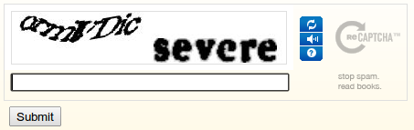
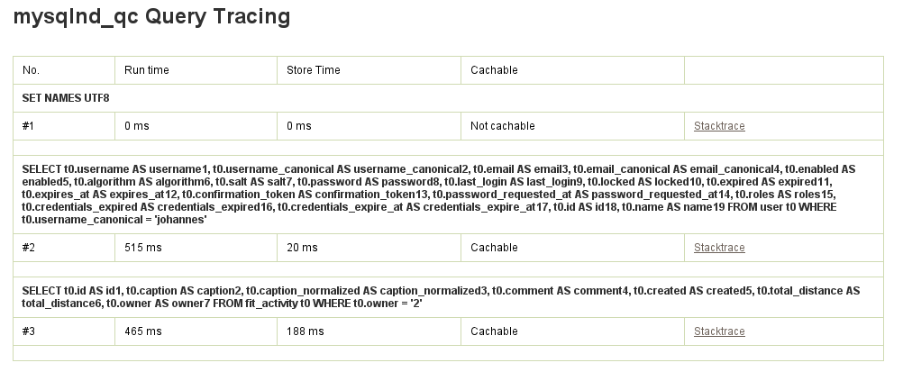

Les Bundles
que vous allez regretter de ne pas avoir connu plus tôt
Une présentation par Damien Alexandre / JoliCode
Symfony Live Paris 2013
@damienalexandre


Conseil, réalisation, audit, expertise et formation
...Poney, Guinness et gif animés.
Le menu
Qu'est qu'un Bundle ?
Everything !
Pourquoi c'est génial
- Des Contrôleurs
- Des Commandes
- Des Services
- Des Entités / Documents
- Des Assets (js, css, images)
- Des Dépendances (librairies)
- Des Outils de debug
- REDISTRIBUABLE & AUTONOME
Quelques chiffres
- 1952 Bundles*
- Plus d'1,5 Bundle par jour est publié
- Symfony 1 ne compte que 1445 plugins
* source : knpbundles.com (on en trouve 1667 sur packagist et 988 sur symfohub)
On est encore loin...
- des 24 000 plugins Wordpress
- des 21 000 modules Drupal
- des 6 141 extensions Joomla!
- des 5 706 extensions Typo3
Et d'un côté : tant mieux...
Les Bundles que même ta mamie connaît

FOSUserBundle
- Gestion des utilisateurs
- Stockage Doctrine ou ODM ou Propel
- Formulaire d'inscription
- Mot de passe oublié
- ...
FOSRestBundle
- Création d'API REST à la volée
- Un contrôleur pour plein de formats de sortie
- Génération de routes automatiques
- Négociation du format (
accept)
<?php
class PoniesController
{
public function getPoniesAction()
{} // "get_ponies" [GET] /ponies
public function newPoniesAction()
{} // "new_ponies" [GET] /ponies/newStofDoctrineExtension‐Bundle
- Installe et configure 11 extensions Doctrine2
- l3pp4rd / DoctrineExtensions
/**
* @Gedmo\Timestampable(on="create")
* @ORM\Column(type="datetime")
*/
private $created;
/**
* @Gedmo\Blameable(on="create")
* @ORM\Column(type="string")
*/
private $createdBy;♥ FOS : Friends of Symfony ♥
Les meilleurs Bundles sous la responsabilité
des contributeurs les plus motivés et compétents.
♥ FOS ♥
Vespolina
http://try.vespolina.org/Sonata Bundles
http://sonata-project.org/Sylius
http://sylius.org/Les Bundles à aimer

Pour le développeur efficace
Qui a dit « fainéant » ?
GenemuFormBundle
- https://github.com/genemu/GenemuFormBundle
- Les Form Type qu'on n'a pas envie d'écrire
- L'upload de fichier simplement
Select2

reCAPTCHA

TinyMCE

Datepicker, Slider, Autocomplete, Colorpicker, Rating, File...
Un super form theme
{% block genemu_jqueryrating_javascript %}
{% spaceless %}
<script type="text/javascript">
jQuery(document).ready(function($) {
$('[name="{{ full_name }}"]').rating({{ configs|json_encode|raw }});
});
</script>
{% endspaceless %}
{% endblock genemu_jqueryrating_javascript %}Facile à installer
- Librairies JS à maintenir vous même
- S'utilise comme n'importe quel FormType
<?php
// ...
public function buildForm(FormBuilder $builder, array $options)
{
$builder
->add('captcha', 'genemu_recaptcha');
}
BazingaFakerBundle
- https://github.com/willdurand/BazingaFakerBundle
- Mieux que des Fixtures !
- Utilise Faker, par Francois Zaninotto
- Les données de test ♥
Faker
echo $faker->name;
// 'Lucy Cechtelar';
echo $faker->address;
// "426 Jordy Lodge
// Cartwrightshire, SC 88120-6700"
echo $faker->text;
// Sint velit eveniet. Rerum atque repellat voluptatem quia rerum. Numquam excepturi
// beatae sint laudantium consequatur. Magni occaecati itaque sint et sit tempore. Nesciunt
// amet quidem. Iusto deleniti cum autem ad quia aperiam.
// A consectetur quos aliquam. In iste aliquid et aut similique suscipit.Intégration via Yml
bazinga_faker:
entities:
Joli\PonyBundle\Model\Pony:
number: 5
Joli\PonyBundle\Model\Guinness:
number: 55Features
- Formateurs custom
- Supporte Propel & Doctrine & Mandango
php app/console faker:populate
IgorwFileServeBundle
- https://github.com/igorw/IgorwFileServeBundle
- Servir des fichiers sécurisés
- StreamedResponse n'est pas bon pour ça
Support de Sendfile
- Envoi de gros fichiers sans passer par PHP
- Délégation complète au serveur HTTP
- Nginx XSendfile
- Apache mod_xsendfile
BinaryFileResponse
- En discussion depuis plus d'un an
- Mergé il y a 3 mois en 2.2
- Documenté depuis hier !*
BinaryFileResponse
- Supporte SendFile
- Supporte If-Range
- X-Accel-Mapping
- Envoi via PHP par défaut
BinaryFileResponse
use Symfony\Component\HttpFoundation\BinaryFileResponse
$file = '/var/private/r-black-Friday-Friday.mp4';
$response = new BinaryFileResponse($file);
$response::trustXSendfileTypeHeader();NelmioApiDocBundle
- https://github.com/nelmio/NelmioApiDocBundle
- Documentation pour API
- Automatique et testable
- Authentification
- Interface sexy
(ouais je sais Guillaume en a parlé hier)
Annotations
<?php
class PonyController extends Controller
{
/**
* Ce blabla sera dans la documentation :)
*
* @Route("/pony")
* @Method({"GET"})
* @ApiDoc(
* resource=true,
* description="Obtenir des poneys",
* filters={
* {"name"="color", "dataType"="integer"}
* }
* )
*/
public function getAction() { }Possibilité d'export statique
app/console api:doc:dump --format=html > api.htmlMarkdown, HTML, Json
Pour profiler et inspecter
Performance et statistiques sont nos amis
LswMemcacheBundle
- https://github.com/LeaseWeb/LswMemcacheBundle
- Faciliter le debug de Memcached
- Avoir un store d'objets à portée de main
- Mettre en memcached les sessions User*
- ADP: Anti Dog Pile
* (Attention quand même)
Un service pour Memcached
lsw_memcache:
clients:
default:
hosts:
- { dsn: localhost, port: 11211 }$this->get('memcache.default')->set('Ponies', 'Are Awesome', 1111);
$this->get('memcache.default')->get('Ponies');Sessions en mémoire
lsw_memcache:
session:
client: default- Aucun accès disque
- Pas de stockage en base de données
- Scalable
- La RAM c'est pas cher, mangez-en
Intégration Web Debug Toolbar
Intégration Web Debug Toolbar
ADP
$this->get('memcache.default')->setAdp('Ponies', 'Yolo', 1111);
$this->get('memcache.default')->getAdp('Ponies');- Sert l'ancienne valeur après expiration
- Seulement 1 process obtient un cache MISS
- Plus lent
JSMysqlndBundle
- https://github.com/johannes/JSMysqlndBundle
- Mysqlnd déchire
- Facile à installer via DotDeb
- Par défaut dans PHP 5.4
- Plein de statistiques
- La stack trace complète avec mysqlnd_qc
Statistiques
Statistiques QC
En savoir plus
WebProfilerExtraBundle
- https://github.com/Elao/WebProfilerExtraBundle
- Debug de Twig, du Router, du DIC et d'Assetic
- Intégration à la Web Debug Toolbar
Web Debug Toolbar

Variables Twig

Router
ZenstruckCacheBundle
- https://github.com/kbond/ZenstruckCacheBundle
- Warm-up HTTP
- Fini le cache vide !
Sitemap
zenstruck_cache:
sitemap_provider: true<?xml version="1.0" encoding="UTF-8"?>
<urlset xmlns="http://www.sitemaps.org/schemas/sitemap/0.9">
<url><loc>http://local.sf2-bundles.com/</loc></url>
<url><loc>http://local.sf2-bundles.com/registration/</loc></url>
<url><loc>http://local.sf2-bundles.com/demo/</loc></url>
<url><loc>http://local.sf2-bundles.com/demo/hello/World</loc></url>
<url><loc>http://local.sf2-bundles.com/demo/hello/Coucou</loc></url>
<url><loc>http://local.sf2-bundles.com/demo/hello/Poney</loc></url>
</urlset>Bonus : Un Bundle pour générer votre sitemap !
Via un service
awesome_url_provider:
class: Acme\DemoBundle\HttpCache\AwesomeWarmupProvider
tags:
- { name: zenstruck_cache.url_provider }<?php
use Zenstruck\Bundle\CacheBundle\HttpCache\UrlProviderInterface;
class AwesomeWarmupProvider implements UrlProviderInterface
{
public function getUrls($host = null)
{
$urls = array();
// do ur biznessss
return $urls;
}
}Ligne de commande
app/console zenstruck:http-cache:warmup http://local.sf2-bundles.com
4/5 [======================>-----] 80%NelmioJsLoggerBundle
- https://github.com/nelmio/NelmioJsLoggerBundle
- Loguer les erreurs Javascript
- Il n'y a pas que le backend qui sait faire !
Remplace « onerror »
{{ nelmio_js_error_logger() }}(function() {
var oldErrorHandler = window.onerror;
window.onerror = function(errorMsg, file, line) {
if (oldErrorHandler) {
oldErrorHandler(errorMsg, file, line);
}
(new Image()).src = '/nelmio-js-logger/log?msg='; // [...]
};
})();Une erreur et c'est le drame

Sans NelmioJsLoggerBundle, elle serait perdue à jamais :(
Dans nos logs
[2013-03-23 19:38:20] event.DEBUG: blablabla
[2013-03-23 19:38:20] event.DEBUG: blablabla
[2013-03-23 19:38:20] frontend.ERROR: Uncaught ReferenceError: loadCornify is not defined {"file":"http://local.sf2-bundles.com/app_dev.php/demo/hello/World","line":"50","browser":"Mozilla/5.0 (X11; Linux x86_64) AppleWebKit/537.22 (KHTML, like Gecko) Ubuntu Chromium/25.0.1364.160 Chrome/25.0.1364.160 Safari/537.22","page":"http://local.sf2-bundles.com/app_dev.php/demo/hello/World"} []
[2013-03-23 19:38:20] event.DEBUG: blablablaVos propres logs
{{ nelmio_js_logger() }} {# Expose une fonction log() #}Et pourquoi ne pas remplacer aussi console.log() !
JnsXhprofBundle
- https://github.com/jonaswouters/XhprofBundle
- Intégration à la Web Debug Toolbar
- Profile toute la stack SF2
- Support de XHGui (Entity)
Activation facile
jns_xhprof:
location_lib: "/usr/share/php5-xhprof/xhprof_lib/utils/xhprof_lib.php"
location_runs: "/usr/share/php5-xhprof/xhprof_lib/utils/xhprof_runs.php"
location_config: "/usr/share/php5-xhprof/xhprof_lib/config.php"
location_web: "http://127.0.0.1/xhprof/"
enabled: trueDans la web debug toolbar

Callgraph par defaut

Support de XHGui
- Stockage en BDD, Entity Doctrine !
- XHGui front par Paul Reinheimer
- Highcharts
- Tablesorter
- Sexy, pratique, open-source
- https://github.com/preinheimer/xhprof
Sexy je vous dit
Pour améliorer le Front
On est tous un peu intégrateur
./symfony project:disable

LexikMaintenanceBundle
- https://github.com/lexik/LexikMaintenanceBundle
- 503 pour tout le monde sauf certaines IP
- Service et Command pour fermer / ouvrir
- Fichier, Memcache, BDD
- Nécessite que SF2 fonctionne...
lexik_maintenance:
authorized_ips: ['127.0.0.1']
driver:
ttl: 3600
class: '\Lexik\Bundle\MaintenanceBundle\Drivers\FileDriver'
options:
file_path: '%kernel.root_dir%/cache/lock'Une commande
./app/console lexik:maintenance:lock
Se customise comme les autres : error503.html.twig.
BazingaExpose‐TranslationBundle
- https://github.com/willdurand/BazingaExposeTranslationBundle
- Expose vos traductions au front via JavaScript
- Gère les placeholders
- Gère la Pluralization
Translator & vos chaînes
{{ url('bazinga_exposetranslation_js') }}<script type="text/javascript"
src="/bundles/bazingaexposetranslation/js/translator.min.js">
</script>
<script type="text/javascript"
src="http://local.sf2-bundles.com/app_dev.php/i18n/messages/en">
</script>Translator.locale = 'en';
Translator.defaultDomains = ["messages"];
Translator.add("messages:homepage.pony", "I fucking love ponies");
Translator.add("messages:symfony2.great", "I love Symfony2");Translator
- Logique de pluriels de Symfony2
- Testé unitairement
- Détection de Domain (explore tous les catalogues avant de retourner
null)
Translator.has('messages:homepage.pony');
>> true
Translator.get('messages:homepage.pony');
>> "I fucking love ponies"
Translator.get('messages:homepage.pony.unknown');
>> "messages:homepage.pony.unknown"
Translator.locale
>> "en"Les mêmes traductions au front et au back \o/
APYJsFormValidation‐Bundle
- https://github.com/Abhoryo/APYJsFormValidationBundle
- Validation des formulaires via JavaScript
- Copain avec BazingaExposeTranslationBundle
Contrainte du Validator
/**
* @var string
*
* @Assert\MinLength(
* limit=3,
* message="Your pony name is not verbose enough!"
* )
* @Assert\NotBlank()
* @ORM\Column(name="name", type="string", length=255)
*/
private $name;Affichage du formulaire
{{ JSFV(form) }}<script type="text/javascript" src="/bundles/jsformvalidation/js/_demo_hello_form.js"></script>_demo_hello_form.js = Nom de la route + Nom du Form
Un Javascript par formulaire
check_form_name: function() {
var gv;
result = true;
result = result && checkError('form_name', MinLength, {message:"Your pony name is not verbose enough!", limit:3, charset:"UTF-8"} );
result = result && checkError('form_name', NotBlank, {message:"This value should not be blank."} );
return result;
},Validation en Javascript
<div>
<label for="form_name" class="required">Name</label>
<ul class="error_list">
<li>Your pony name is not verbose enough!</li>
</ul>
<input type="text" id="form_name" name="form[name]" required="required">
</div>Pour le fun
Carambar® is coming
Une documentation en Japonais
What could possibly go wrong...
SymfonyanBundle
- https://github.com/symfonyans/SymfonyanBundle
- しんふぉにゃんを仕込むためのSymfony2バンドルです
- Hein ?
- Le nom est cool

- Ne pas reproduire à la maison, cascadeur entrainé !
Ça marche pas
$ app/console symfonyan:exception-install
Installing symfonyan exception to app/Resources/FrameworkBundleDestination fausse, vues 2.0... mais on corrige !
Nouvelle page d'erreur
Nouvelle exception
Page de bienvenue
$ app/console symfonyan:welcome-install
Installing symfonyan welcomepage to app/Resources/AcmeDemoBundlesfContextBundle
- https://github.com/francisbesset/sfContextBundle
- Nostalgie !
- sfContext MADNESS
Quick & Dirty YEAH
$request = \sfContext::getInstance()->getContainer()->get('request');Problème de scope / dépendance ? Plus jamais !
\sfContext::createInstance($this->container);
\sfContext::getInstance();
NON
MarcWWurstBundle
- https://github.com/marcw/MarcWWurstBundle
- Must have
- Installation par Composer cassée (PR en cours)
- A son propre badge Sensio Connect
SAUCISSE
$ app/console wurst:print
Art from: http://www.wurstblog.de/aufschnitt/ascii-wurst
.c.
.0MXd'
,KMMMMWO:.
:NMMMMMMMMXo.
.,:cllllc:,.. lWMMMMMMMMMMMWk;
.,cd0NWMMMMMMMMMMWN00WMMMMMMMMMMMMMMMKo.
.ckXMMMMMMMMMMMMMMMMMMMMMMMMWNXK00Okxdolc:,
'l0WMMMMMMMMMMMMMMMMMMMMMMMMMMMNo.
.l0WMMMMMMMMMMMMMMMMMMMMMMMMMMMMMMMWo
.cOWMMMMMMMMMMMMMMMMMMMMMMMMMMMMMMMMMMMN'
'dXMMMMMMMMMMMMMMMMMMMMMMMMMMMMMMMMMMMMMMX.
;OWMMMMMMMMMMMMMMMMMMMMMMMMMMMMMMMMMMMMMMMX;
.lKWMMMMMMMMMMMMMMMMMMMMMMMMMMMMMMMMMMMMMMW0l.
.oNMMMMMMMMMMMMMMMMMMMMMMMMMMMMMMMMMMMMMMXkc.
;KMMMMMMMMMMMMMMMMMMMMMMMMMMMMMMMMMMMMWKd;.
.xWMMMMMMMMMMMMMMMMMMMMMMMMMMMMMMMMMMMXd,
'0MMMMMMMMMMMMMMMMMMMMMMMMMMMMMMMMMMWO:.
;XMMMMMMMMMMMMMMMMMMMMMMMMMMMMMMMMMNx'
:NMMMMMMMMMMMMMMMMMMMMMMMMMMMMMMMMWk'
;NMMMMMMMMMMMMMMMMMMMMMMMMMMMMMMMMK;
.XMMMMMMMMMMMMMMMMMMMMMMMMMMMMMMMWk.
kMMMMMMMMMMMMMMMMMMMMMMMMMMMMMMMWd
;WMMMMMMMMMMMMMMMMMMMMMMMMMMMMMMMx
kMMMMMMMMMMMMMMMMMMMMMMMMMMMMMMWk.
.XMMMMMMMMMMMMMMMMMMMMMMMMMMMMMM0.
;WMMMMMMMMMMMMMMMMMMMMMMMMMMMMMMo
;WMMMMMMMMMMMMMMMMMMMMMMMMMMMMMMl
,NMMMMMMMMMMMMMMMMMMMMMMMMMMMMMMd
.XMMMMMMMMMMMMMMMMMMMMMMMMMMMMMM0.
xMMMMMMMMMMMMMMMMMMMMMMMMMMMMMMWk.
;WMMMMMMMMMMMMMMMMMMMMMMMMMMMMMMMd
kMMMMMMMMMMMMMMMMMMMMMMMMMMMMMMMWl
'XMMMMMMMMMMMMMMMMMMMMMMMMMMMMMMMWo
:NMMMMMMMMMMMMMMMMMMMMMMMMMMMMMMMWk.
cWMMMMMMMMMMMMMMMMMMMMMMMMMMMMMMMMK;
:XMMMMMMMMMMMMMMMMMMMMMMMMMMMMMMMMWl
.0MMMMMMMMMMMMMMMMMMMMMMMMMMMMMMMMN'
.xWMMMMMMMMMMMMMMMMMMMMMMMMMMMMMMK.
:XMMMMMMMMMMMMMMMMMMMMMMMMMMMMK,
.dNMMMMMMMMMMMMMMMMMMMMMMMMKl.
.ckXWMMMMMMMMMMMMMMMMMXd,
':lxkO0KK00WMMMMMMN0xl;.
.KMMMMMMMMMMMWXOd:'.
.0MMMMMMMMMMMMMMMN0o'
OMMMMMMMMMMN0xc,.
OMMMMWX0dc'.
xKkl;.
..
Beaucoup d'options
Usage: wurst:print [--mit-pommes] [--mit-mayonnaise] [--mit-beer] [--mit-pretzel] [--mit-coffee] [--mit-kase] [--mit-chocolate] [--mit-wine] [--mit-tea] [--mit-ketchup] [--mit-aioli] [--mit-tomato] [type] Arguments: type Which type of würst you want (blackpudding, wiener, salami, running-wurst, bratwurst_mit_broetchen, classic, schwarzwurst, landjaeger, veggie, choux, chorizo, gerauchertewurst, mettwurst, botifarra_mit_mongetes, currywurst, grill-servelat, wurst_morteau_fr, vegan, weisswurst, im_schlafrock, hotdog)? (default: "classic")
app/console wurst:print im_schlafrock --mit-beer
.,:;::;;;:,
.::rS2XX25i2223&G&H&Xh35r,.
;53MB32Si525iSisri5hAh222XAG&35;.
rh&h225iiisrrr;5iSs;r2SrS2SsS5S2X3h5rr:
ii.;ii52i5iiSiiir;ri55Sr:;rrrsrsSS2222XX&A22Xr;..
:#@::X2;srri5rrriSirsrrrrrr;sr;rrsss5si3X5ii;rS9A3X5ir;,.
&@r,AAXSsSi;sisrrr;;rr;;;:;ssssrrr;rr;rsSSSSrs;;rs3X9hHhHA2:
#@,;A2i522r:;riisssirrsrrr;;;;r;;;:,rsXi52Xir;:r;r52X32;;sA@H.
9@3 .;rrrrsr;,:;rrsiS;:rr:;r:;r;r;;;rrr;5ii;;;ir;;rrsi55isssX&s.
i&@#r:. .,;iir:;rr;;rr;,:;r;;::;;;r;;;:,,s,:,;sS,:s:rrss232SS9AAGr
,5@@@@@@9::ssrrrsr;s;:r::;;;::,:rr;;;,,;;, ,,rriir:,:;rii2XissrrSXirr
;ii2iXhr::,;rsr;;rr;;;.:, :r:,;,:;,,:;;..:s,:S5r::rrisi;.;ir;rrsS52XS:.
.2HHHM@@B9552srsr.,..,,,:.,,. .:,..,;;:::,,sisir.;is:s.,i5522S5X9&H##A9s.
;XH#@@@@@@@@@@Hr,. ..,:,,,.,:.. :::;,..::,;rr,ss,,s;r;rSSSiiiSiri3hM#B5
,;i9H#@@@@@@&i:.. ,;::,.,,,:;..:,;,.:ii:rs r;s;:rSiiissr;:s23AX52i;
:ih#@@@HS: .:..:..;s::i::::rX2;;;;rrs:;:rrs32S2S55siX9##G22;
,S#@@3, ,, ...,;;,;:;r:r;;r,.:;rSrrr5255S29522riXAM##AABBr
;@@3; ,:,;;r,:r;,,.;:.,;sr;:i3iSXrsssi2X32sSAG32MBB##
SB#&; ::;r;.;,,r:.: ,::;::;ssiS;rs2BMGAh3ii&9G9M&MH@&
.r2S,. ;. :r.:r,.,.,,::;rSs:sir;r9GA#HGhGXX2XXXSi2G@:
,;;...:r;. ..,.,,,,:;sr.:iiiSsihHGSrr22s;;;;;;r5BS
.::;;: ....,,.,:;;:;rrrrr;XG5isr,:;:.,,,,:;S#H
,;2X;..,....,;;:,;;.;;;rr2Sr;,...,Ss;r;. .,9:
r&&i;, ..,,:.,..:r:irSi; ,rr:r&S:,.... ,
.2#Hr. ,,,.:rrisi;,:rG@#Ah2XMi..,. ;:
i@M2. ,:,,;risr,.h@@@@#XSiri3r,....,.
s#A,.,:,,:rS; A@@@##A;:hsiShr,...
i5,,;:::rr,;@@#HHBhrrX;iS2Gr,.
:rr,:;;;r,;##H#@MA3r:rS252i:,
.,,.;;:;;;2hH@@#AAX399h2s;:
..,;;;;:;SXhBG9A9GhXs:.;.
.:;r;:rsrS52Si;,,,,
:SXXA2S5X5i2s:.
:ssrrr;:r.
_.._..,_,_
( )
]~,"-.-~~[
.=])' (; ([
| ]:: ' [
'=]): .) ([
|:: ' |
~~----~~
from : http://www.ascii-art.de/ascii/ab/beer.txt
EasterEggBundle ?
Si vous ne savez pas quoi faire demain au Hacking Day !
Comment choisir un Bundle ?
Des sites spécialisés
Score & popularité
- 1 point par follower sur GitHub
- 5 points pour un bon README (300 caractères)
- 5 points pour Travis CI
- 5 points si Travis CI est vert
- 5 points si Composer
- 5 points par recommandation KnpBundles
- Petit boost sur les commits récents
Score & popularité
- Nombre d'installations / jour
- Nombre de dépendances
- Nombre de versions